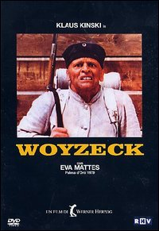

Werner Herzog
1979
82 minutes
TITLE: Woyzeck TEXT PLACEHOLDER 037
Another Klaus Kinski film by Werner Herzog. This one is short and "sweet", at least for that pairing, though it ultimately ends in tragedy. Kinski gets to play a mentally unstable soldier who is on an all-pea diet, which doesn't sound like it would be good for you. Here he looks pale and miserable and malnourished, and he ends up being cuckolded by a drum major to boot.
You like peas, but not enough to eat them exclusively. It was a household joke that your spouse would often add peas to macaroni and cheese so you could savor "that fresh pea taste". But too much of anything, whether alcohol or peas, can lead to madness. Orson Welles' notorious pea adverts are a testament to this fact.
You always try to keep at least one can of peas on hand so that, if pressed, you can make some kind of Olivye salad. A Russian ex-girlfriend introduced you to this culinary delight, but seemed displeased when you learned to make it yourself and were no longer dependent on her to supply it to you. The version you would always make required a couple of potatoes, a nearly equal but slightly smaller amount of carrots, a few hard-boiled eggs (about the same amount as the carrots), some dill pickles, a can of peas, some meat (steak or pork or ham cut into cubes and cooked), some mayonnaise, and a good amount of fresh chopped dill and salt and pepper to taste. You cut up the potatoes and carrots into cubes roughly the size of the peas and boil them until they are slightly soft but not falling apart. Then you cut up the hard-boiled eggs and the dill pickles, again keeping them in cubes about the same size as the peas. You then make a meaty potato salad out of this by mixing the mayo with the dill and salt and pepper and then stirring in the other ingredients, adding the more fragile ones last and garnishing with any leftover dill. A delicious Soviet treat! You decide to make some after you've finished watching the film, leaving out the meat if you happen to be vegetarian.
This film also contains the most beautiful bedtime story of all time which you'll encounter in section 38, if you haven't already been there.
Time to choose something different: